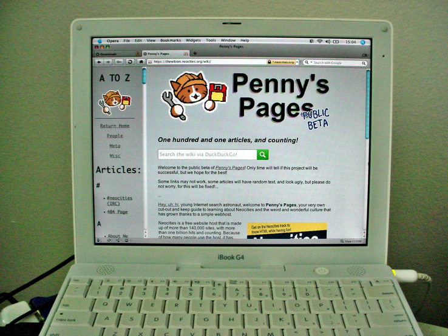
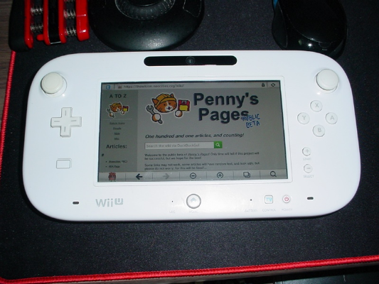
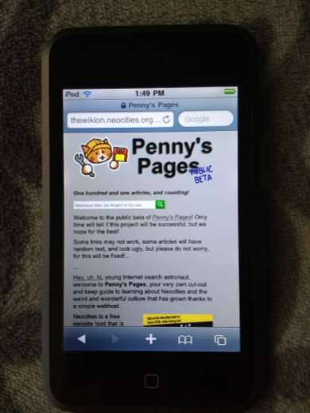
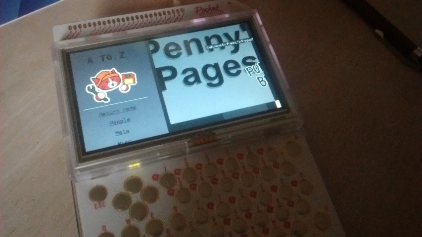
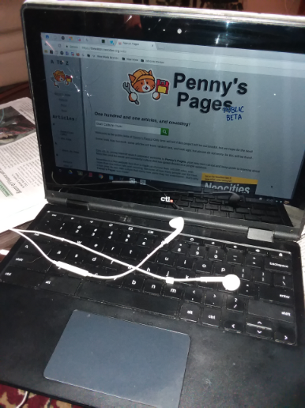
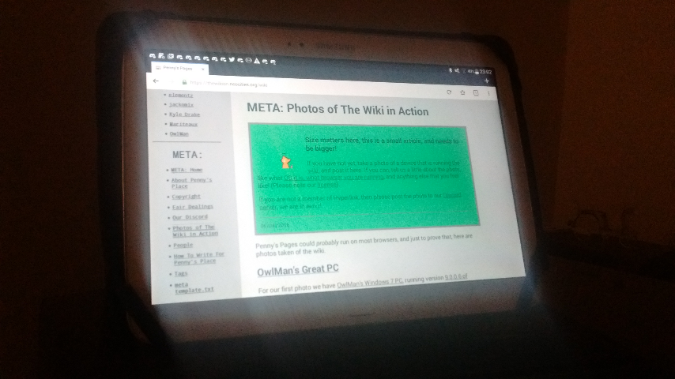
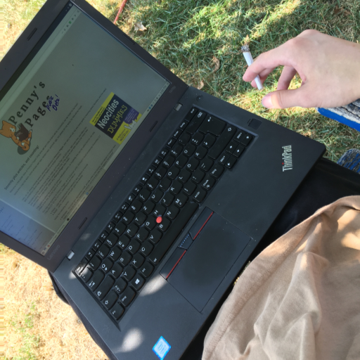
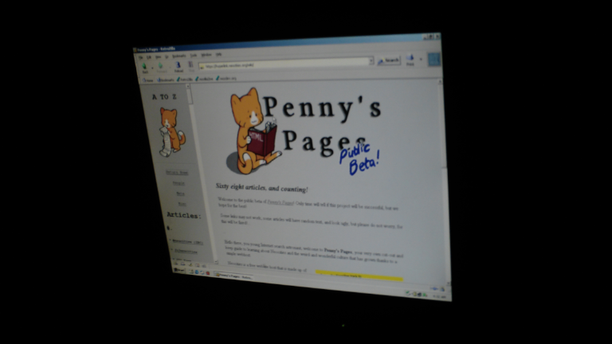
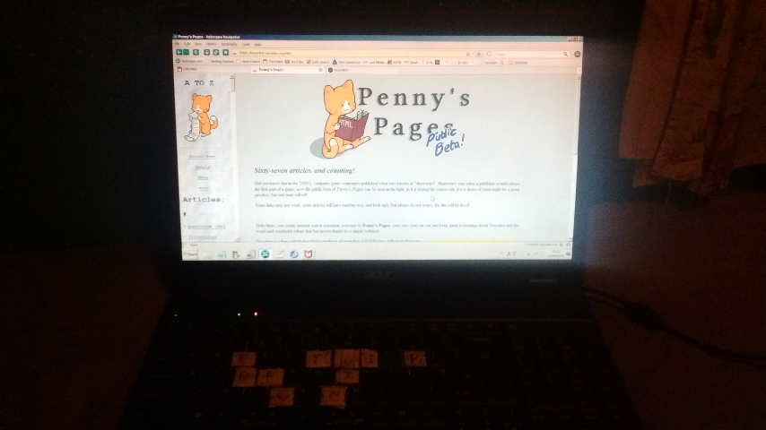

META: Photos of The Wiki in Action

Size matters here, this is a small article, and needs to be bigger!
If you have not yet, take a photo of a device that is running the wiki, and post it here. If you can, tell us a little about the photo, like what OS it is, what browser you are running, and anything else that you feel like! (Please note our license).
Don't own a camera? That's fine, you can simply use your phone for the image.
Please add new images on top, so that the old ones are at the bottom.
2019-03-03
Penny's Pages could probably run on most browsers, and just to prove that, here are photos taken of the wiki.
Bytemoth running the wiki on their 1.2GHz iBook G4, OS X Tiger (10.4.11), Opera 10.63 (2010)

Click here for a larger version of this photo
Bytemoth running the wiki on their Wii U, System 5.5.2U, Browser 4.3.2.11274

Click here for a larger version of this photo
Nekojiru was able to get her Generation 1 iPod Touch to run the wiki using Safari 4.0.

Click here for a larger version of this photo
joppiesaus managed to run the wiki on his Pocketchip, he writes; "penny's pages on the pocketchip, this took a while, had to reflash it, wasn't that easy, the site is offline as the company who made it went bankrupt but anyways here it is1!! [...] the browser I used is surf (https://surf.suckless.org/) 0.6, which is the only browser which came pre-installed. and it runs on some sort of debian??? idk uname -a returns Linux chip 4.4.13-ntc-mlc #1 SMP Tue Dec 6 21:38:00 UTC 2016 armv7l GNU/Linux".

Click here for a larger version of this photo
emily's somewhat broken laptop that is running on Chrome OS, with Google Chrome version 72.

Click here for a larger version of this photo
OwlMan's c. 2015 Android KitKat running on Firefox 65.

Click here for a larger version of this photo
The next photo was taken by strata, showing him on a bench. The wiki is running on Firefox 61.0.1 on openSUSE Tumbleweed / Linux 4.17!

Click here for a larger version of this photo
Here we can see dotcomboom's computer running the wiki. DCM is using Windows 2000, with RetroZilla 2.1 as a browser.

Click here for a larger version of this photo
OwlMan's Windows 7 PC, running version 9.0.0.6 of Netscape Navigator - a browser that was last updated in 2009. Note that the spacebar, the right arrow, the letters E, Y, U, I, P, D, D, J, V, and N are missing.

Click here for a larger version of this photo
This page was last updated: 2019-04-10 @ 03:32
In total this page has had 10 updates since it was uploaded.
★
{kind=link}
{kind=link}
{kind=link}
{kind=link}
{kind=link}
{kind=link}
{kind=link}
{kind=link}
{kind=link}